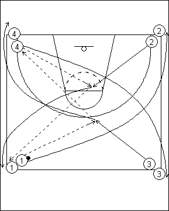

Catégorie : PASSES (Pas-007)
Déroulement
- Quatre files de joueurs aux quatre coins d’un demi-terrain. Un seul ballon dans la file 1.
- Le premier joueur de la file 1 passe au premier joueur de la file 3, qui est venu à la ligne des trois points. Après sa passe au premier joueur de la file 3, le premier joueur de la file 1 va dans la file 2. Le premier joueur de la file 3 passe au premier de la file 4 et va derrière cette file. C’est maintenant le premier joueur de la file 4 qui passe au premier joueur de la file 2 qui s’est avancé à la ligne des lancers-francs. Après sa passe au premier joueur de la file 2, le premier joueur de la file 4 va derrière la file 3. Le premier joueur de la file 2 passe au deuxième joueur de la file 1 et va derrière cette file.
- L’exercice continue de la même façon. On remarque donc :
- que les joueurs 1 et 2 sont toujours dans les deux mêmes files; idem pour les 3 et 4;
- que le ballon va toujours dans les deux mêmes coins (ceux où se trouvent les files 1 et 4);
- que les joueurs qui reçoivent en mouvement au milieu viennent toujours des deux mêmes coins (files 2 et 3).
Coaching points
- Insister sur la précision et la vitesse des passes. Il n’y a qu’un seul ballon; celui-ci doit donc circuler rapidement.